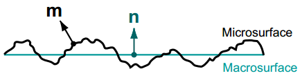
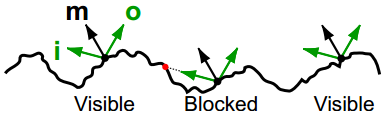
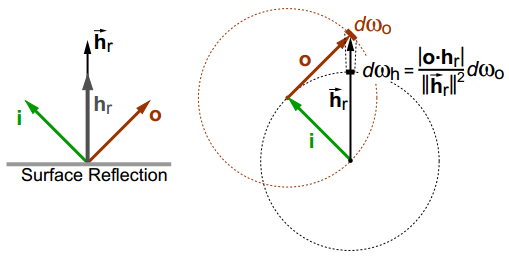

简介
Cook-Torrance BRDF 模型是最常用的一个基于物理的 BRDF（Bidirectional Reflectance Distribution Function，双向反射分布函数）模型，电影、游戏等涉及图形渲染的领域都能见到它的身影。Cook-Torrance BRDF 模型基于微面元理论，具有简洁的表达式，但相关论文中给出的推导过程却比较难以理解。在本文中，我们先简要回顾辐射度量学以及微面元理论，然后给出一个相对直观的推导过程。
辐射度量学
辐射度量学中与 BRDF 息息相关的几个物理量分别是：辐射通量 $\Phi$、辐射照度 $E$ 以及辐射率 $L$。其中辐射通量定义为单位时间内的辐射能，即：
而辐射照度定义为单位面积上的辐射通量，即：
然后是辐射率，它被定义为单位投影面积、单位立体角内的辐射通量，即：
渲染的目标就是计算辐射率，它可以被认为是一根光线的能量。最后是 BRDF，它被定义为出射辐射率微分 $\mathrm{d}L_o$ 与入射辐射照度微分 $\mathrm{d}E_i$ 的比值，即：
微面元理论
如下图所示，微面元理论假设宏观表面是由一系列微观表面构成。微观表面非常非常小无法直接看到，因此我们累积微观表面反射的能量，并在宏观表面的角度看待反射，进而定义 BRDF。单独考虑每个微观表面十分困难，因此需要在统计意义上描述微观表面，这里就用到了法向分布函数 $D$ 和阴影遮挡函数 $G$。此外，虽然微观表面非常小，但这里仅仅考虑几何光学的影响，而忽略波动光学。

法向分布函数
法向分布函数 $D(\mathbf{m})$ 描述了微表面法向 $\mathbf{m}$ 的分布规律，对于给定的宏观表面面积微分 $\mathrm{d}A$ 以及立体角微分 $\mathrm{d}\omega_m$，可以通过 $D(\mathbf{m})\mathrm{d}A\mathrm{d}\omega_m$ 计算得到法向为 $\mathbf{m}$ 的微表面面积。
一个合理的法向分布函数显然应该是非负的，且其在宏观表面上的投影是 $1$，即：
这里 $\mathbf{n}$ 是宏观表面法向，而 $\mathbf{m}\cdot\mathbf{n}$ 即得到投影的比例。
阴影遮挡函数
对于给定入射方向 $\mathbf{i}$ 以及出射方向 $\mathbf{o}$，阴影遮挡函数 $G(\mathbf{i},\mathbf{o},\mathbf{m})$ 描述了从两个方向均可见的微表面的比例，显然 $0\leq G(\mathbf{i},\mathbf{o},\mathbf{m}) \leq 1$。如下图所示，微表面之间会发生遮挡，因此只有其中一部分微表面才可以将 $\mathbf{i}$ 方向的入射光反射到 $\mathbf{o}$ 方向。$G$ 在掠射角的情况下对能量守恒起到了重要的作用。

推导BRDF公式
我们从 BRDF 的定义出发，推导 Cook-Torrance BRDF 的公式。
首先推导 BRDF 的分母，宏表面入射辐照度微分 $\mathrm{d}E_i$。根据辐射率 $L$ 的定义，可以很容易地得到：
这里 $\mathbf{i}$ 和 $\mathbf{n}$ 分别表示入射方向和法向方向，其内积即夹角余弦。
然后关键即推导 BRDF 的分子，宏表面出射辐射率微分 $\mathrm{d}L_o$。由于微面元理论假设每个微表面都是完美镜面，因此仅有法向为 $\mathbf{i}$ 和 $\mathbf{o}$ 的半向量 $\mathbf{m}=\frac{\mathbf{i}+\mathbf{o}}{\vert \mathbf{i}+\mathbf{o} \vert}$ 的微表面才会影响结果。根据辐射率的定义，可以得到法向为 $\mathbf{m}$ 的微表面上入射的辐射通量微分：
而微表面的可见面积 $\mathrm{d}A_m$ 可以通过法向分布函数和阴影遮挡函数得到：
这里 $\mathrm{d}A$ 表示宏表面面积微分。注意上式右边具有两个微分符号，因此我们得到的实际上是入射辐射通量的三阶微分：
一个直观的理解是，入射的能量可以被反射到各个方向，而这里我们指定了出射方向，因此增加了一阶微分。根据菲涅尔定律，我们得到出射的辐射通量微分：
接下来从宏观表面的角度计算出射辐射率微分：
最后将 $\mathrm{d}E_i$ 和 $\mathrm{d}L_o$ 带入 BRDF 的定义式可以得到：
由于 $\mathbf{m}$ 是半向量，因此 $\vert \frac{\mathrm{d}\omega_m}{\mathrm{d}\omega_o} \vert$ 可以使用下图的直观方式进行计算：

将 $\vert \frac{\mathrm{d}\omega_m}{\mathrm{d}\omega_o} \vert=\frac{1}{4(\mathbf{o}\cdot\mathbf{m})}$ 带入得到最终的结果：